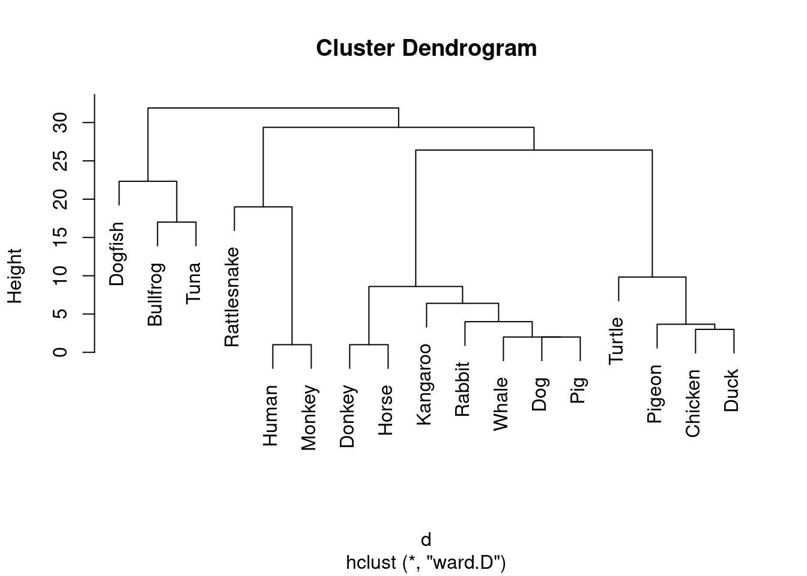
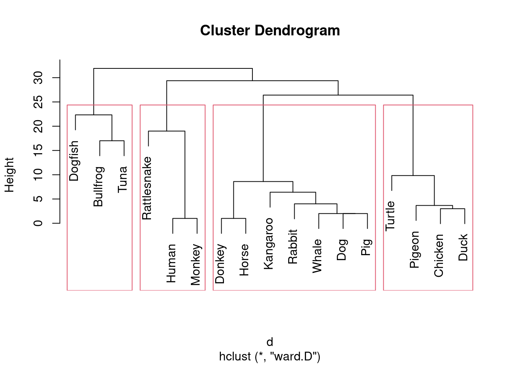
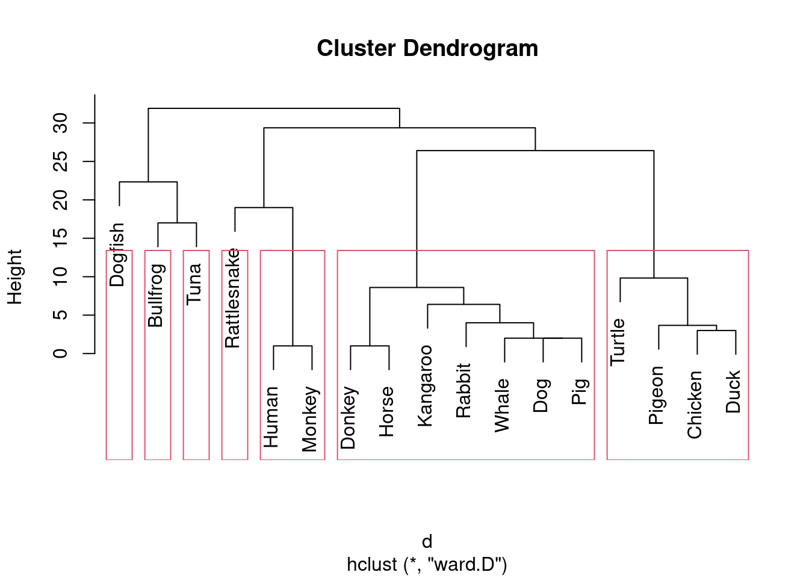
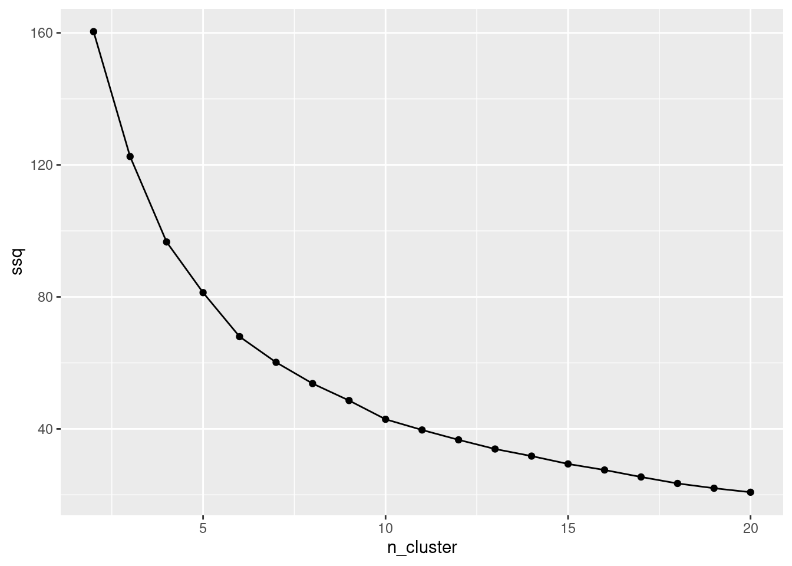

Rows: 17 Columns: 18
── Column specification ────────────────────────────────────────────────────────
Delimiter: ","
chr (1): species
dbl (17): Bullfrog, Chicken, Dog, Dogfish, Donkey, Duck, Horse, Human, Kanga...
ℹ Use `spec()` to retrieve the full column specification for this data.
ℹ Specify the column types or set `show_col_types = FALSE` to quiet this message.
These are the dissimilarities arranged in a triangle, broken up into pieces so that all of it is displayed within the width of the screen.
Obtain a hierarchical cluster analysis using Ward’s method , and display the dendrogram.
d.1<-hclust(d, method ="ward.D")plot(d.1)

Which are the first two species to be combined in to a cluster? You will need too btain some more output to get the unique answer to this q uestion. Describe how you found your answer.
This shows which species (negative numbers) are combined into clusters, and (later) which clusters (positive) numbers are combined together. In this case, species numbers 5 and 7 are the first to be combined into a cluster.
Use your output from the previous question to find out which individual species is the last to be added to a cluster. Describe how you found your answer.
The bottom three lines are of clusters being joined together (for example, in row 14, the clusters formed at steps 9 and 10 are combined). But in row 13, species 4 is combined with the cluster formed at step 11. Look at the labels to see that species 4 is Dogfish.
Redraw your dendrogram with 4 clusters shown on it. Repeat with 7 clusters.
plot(d.1)rect.hclust(d.1, 4)

plot(d.1)rect.hclust(d.1, 7)

Based on what you know or can find out about these vertebrate species, do you prefer the 4-cluster or the 7-cluster solution? Explain briefly.
The seven-cluster solution is preferable because it separates species in a way that makes more biological sense. In the four-cluster solution, humans and monkeys are grouped with rattlesnakes, even though humans and monkeys are much more similar to each other than either is to a rattlesnake. In the seven-cluster solution, rattlesnakes are split off, which creates a more reasonable grouping. It also separates dogfish, bullfrogs, and tuna, which may all be vertebrates and may share an aquatic environment, but are still very different kinds of animals. Overall, the seven-cluster solution is better because it avoids combining species that are clearly distinct in biological terms.
Rows: 101 Columns: 7
── Column specification ────────────────────────────────────────────────────────
Delimiter: ","
dbl (7): id, mass, period, eccen, log_mass, log_period, sqrt_eccen
ℹ Use `spec()` to retrieve the full column specification for this data.
ℹ Specify the column types or set `show_col_types = FALSE` to quiet this message.
Create and save a new data frame that contains the z-score values of only the three variables of interest. Hint: what do the names of your variables of interest have in common?
Taking z-scores does nothing to make a distribution more normal. It just scales it to have a common mean (0) and SD (1).
Run a K-means cluster analysis with 5 clusters, and display the output. Hint: how do you make sure an output based on randomness comes out the same when you re-run it?
K-means is a random algorithm so we have to run it several times (using nstart) and take the best result.
Which of your clusters has the fewest exoplanets in it? From your output, what seems to be distinctive about this cluster, in terms of the original variables?
Cluster 3, with 8 exoplanets in it (8 observations). Hence, the exoplanets in cluster 3 have small mass (and, optionally, smaller-than-average period, though not as small as cluster 4, and eccentricity close to the mean, but this last is not “distinctive”).
List the IDs of the exoplanets in the cluster you found in the previous question.
Obtain a scree plot for 2 through 20 clusters. What seems to be a good number of clusters to use, different from the 5 clusters you used before? Hint: to work out the total within-cluster sum of squares, you can use the function in the lecture notes.
ss <-function(i, d) { d %>%select(where(is.numeric)) %>%kmeans(i, nstart =20) -> km km$tot.withinss}
This takes as input a number of clusters and a dataframe to run kmeans on (that is to say, our standardized one planets_scaled ).
Next, we make a dataframe with the numbers of clusters we want on our scree plot, and (rowwise) work out the total within-cluster sum of squares for each:
ggplot(w, aes(x = n_cluster, y = ssq)) +geom_point() +geom_line()

We can see elbows at 6 and 10 clusters; We can choose either one of these. With 101 observations, we might even be able to justify more than 10 clusters. But we can stick with 10 clusters.
Run K-means with your chosen number of clusters, and display the output.
For one of the exoplanets you found in Question 12, it does not matter which one, find out which cluster it is in in your solution to Question 14. Then find out which other exoplanets are in that same cluster in Question 14. Does the cluster membership appear to be similar in Questions 12 and 14? Explain briefly.